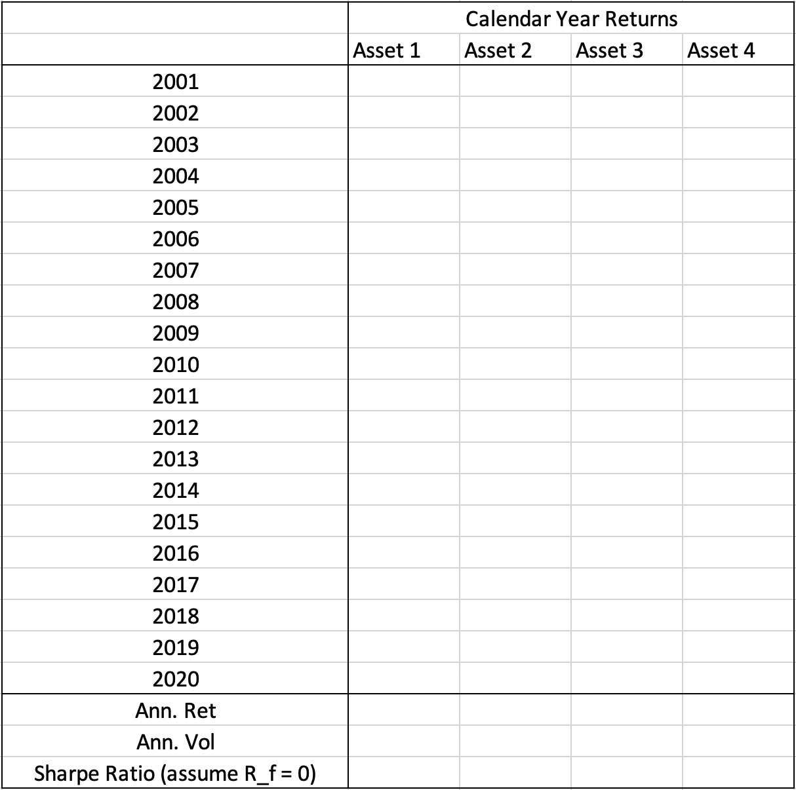

Project 1: Momentum Strategies¶
By: Chengyi (Jeff) Chen
Description of The Project:¶
We want to test the momentum effect on different assets. We have daily price time series information for assets in the following asset classes:
Equity Index
Credit (Corporate Bonds)
Govt Bond (Sovereign Bonds)
Currencies
Commodities
Equity Factors
You choose one of the above 6 asset classes, and we’ll build momentum portfolios for each one of the assets in the chosen asset class.
For every asset, based on its price time series, a momentum portfolio could be built in the following way: Step 1: starting from 12/31/2001, at each month-end time point, calculate the asset’s return in the past 12 months, if the return is positive (negative), the portfolio longs (shorts) 100% of the asset and holds the long (short) position for the next month. Step 2: calculate the monthly returns for the above-built portfolio till 2020/8/31. Step 3: prepare the deliverable table as follows:
{kind=link}
Bonus problem
At step 1, at each month-end date, calculate all asset returns in the past 12 months,
and allocate 50% weight to the top two performing assets respectively; and -50% to the bottom two performing assets respectively in your portfolio.
And then do step 2 and step 3.
%load_ext nb_black
%load_ext autotime
import pandas as pd
import numpy as np
from typing import Dict
from datetime import datetime, timedelta
from abc import ABC, abstractmethod
def get_asset_class_data(raw_data: pd.DataFrame) -> pd.DataFrame:
"""Splits the Raw dataframe into the separate asset
class dataframes and return them in a MultiIndex Dataframe
"""
asset_class_df_list = np.split(
raw_data, np.argwhere(raw_data.isnull().all(axis=0).values).flatten(), axis=1
)
asset_class_dfs = {}
for df in asset_class_df_list:
df = df.dropna(how="all", axis=1)
asset_class_name = df.iloc[0, 0]
columns = df.iloc[0, :].str.cat(df.iloc[1, :], sep=" - ")
columns.iloc[0] = "Date"
df.columns = columns
df = df.drop([0, 1], axis=0)
df = df.set_index("Date")
asset_class_dfs[
asset_class_name
] = df.sort_index() # Earliest stock price on top
return pd.concat(asset_class_dfs, names=["asset_class", "security"], axis=1)
class TradingStrategy(ABC):
def __init__(
self, name: str, asset_class_history: pd.DataFrame, asset_class="Equity Idx"
):
self.name = name
self.asset_class = asset_class
self.asset_class_history = asset_class_history
@abstractmethod
def execute_backtest(self):
""""""
pass
@abstractmethod
def _results(self):
""""""
pass
@staticmethod
def annualized_volatility(returns):
returns = returns.dropna(axis=0)
return np.std(returns) * np.sqrt(len(returns)) if len(returns) > 0 else None
@staticmethod
def annualized_return(returns):
returns = returns.dropna(axis=0)
return (
(
np.prod(np.ones(len(returns)) + np.array(returns)) ** (1 / len(returns))
- 1
)
if len(returns) > 0
else None
)
@staticmethod
def calendar_year_return(returns):
returns = returns.dropna(axis=0)
return (
((TradingStrategy.annualized_return(returns) + 1) ** 12) - 1
if len(returns) > 0
else None
)
@staticmethod
def sharpe_ratio(returns, R_f=0):
returns = returns.dropna(axis=0)
R_p = TradingStrategy.annualized_return(returns)
σ_p = TradingStrategy.annualized_volatility(returns)
return (R_p - R_f) / σ_p if len(returns) > 0 else None
data = get_asset_class_data(
pd.read_excel(
"./data/Project1_TimeSeries_Momentum_Due20200913.xlsx",
sheet_name=2,
header=None,
)
)
time: 3.34 s
Time Series Momentum Strategy¶
class TimeSeriesMomentumStrategy(TradingStrategy):
"""Longs (Shorts) 100% for 1 month if asset's own past 12 month returns > 0 (< 0)
Assumes that all transactions happen on the end of month
"""
def __init__(self, momentum_signal_period: int = 12, **kwargs):
super().__init__(name="Time Series Momentum Strategy", **kwargs)
self.momentum_signal_period = momentum_signal_period
self.target_asset_history = self.asset_class_history[
self.asset_class_history.columns[
self.asset_class_history.columns.get_level_values("asset_class")
== asset_class
]
]
def filter_month_end(self, df):
"""Filter out only data of end of month"""
dates = df.index
only_month_end_df = df[pd.Series(dates, index=dates).dt.is_month_end]
return only_month_end_df
def check_data(self):
""""""
# Check if there's enough data from the past data for a momentum strategy
try:
self.start_date_idx = np.argwhere(
self.only_month_end_df.index
== datetime.strptime(self.start_date, self.date_format)
).flatten()[0]
self.end_date_idx = np.argwhere(
self.only_month_end_df.index
== datetime.strptime(self.end_date, self.date_format)
).flatten()[0]
except:
raise ValueError(f"{start_date} not available in asset history data.")
assert self.start_date_idx - 1 >= self.momentum_signal_period, print(
f"There is not enough data (Number of months < {self.momentum_signal_period}) before {self.start_date} to generate a momentum signal."
)
def execute_backtest(
self,
start_date: str = "2001-12-31",
end_date: str = "2020-08-31",
date_format: str = "%Y-%m-%d",
):
"""Contains the actual trading logic """
self.start_date = start_date
self.end_date = end_date
self.date_format = date_format
self.only_month_end_df = self.filter_month_end(df=self.target_asset_history)
self.check_data()
self.past_12_month_returns = self.only_month_end_df.pct_change(
self.momentum_signal_period
).iloc[
self.start_date_idx : self.end_date_idx + 1
] # Cumulative returns from past 12 months
self.monthly_long_position_returns = (
self.only_month_end_df.iloc[self.start_date_idx - 1 :]
.pct_change(1)
.iloc[1 : self.end_date_idx + 1]
) # End of Month Monthly Long position returns
self.monthly_returns = (
self.past_12_month_returns.apply(np.sign).shift(1).iloc[1:]
* self.monthly_long_position_returns.iloc[1:]
)
self._results()
def _results(self):
""""""
self.annual_results = self.monthly_returns.groupby(
[self.monthly_returns.index.year]
).agg([self.calendar_year_return])
self.asset_class_annualized_returns = self.annual_results.apply(
self.annualized_return, axis=0
).droplevel(-1)
self.asset_class_annualized_returns.name = "Annualized Returns"
self.asset_class_annualized_volatility = (
self.monthly_returns.groupby([self.monthly_returns.index.year])
.agg([self.annualized_volatility])
.apply(self.annualized_volatility, axis=0)
).droplevel(-1)
self.asset_class_annualized_volatility.name = "Annualized Volatility"
self.asset_class_sharpe_ratio = self.annual_results.apply(
self.sharpe_ratio, axis=0
).droplevel(-1)
self.asset_class_sharpe_ratio.name = "Sharpe Ratio (assuming $R_f$ = 0)"
display(self.annual_results)
display(
pd.concat(
[
self.asset_class_annualized_returns,
self.asset_class_annualized_volatility,
self.asset_class_sharpe_ratio,
],
axis=1,
).transpose()
)
time: 58.3 ms
for asset_class in data.columns.get_level_values("asset_class").unique():
print("=" * 100)
tsms = TimeSeriesMomentumStrategy(asset_class=asset_class, asset_class_history=data)
tsms.execute_backtest()
====================================================================================================
| Equity Idx | |||||||||||||||
|---|---|---|---|---|---|---|---|---|---|---|---|---|---|---|---|
| S&P 500 - SPX | Russell 2K - RTY | NASDAQ 100 - NDX | Hang Seng - HSI | Shanghai SE - SHCOMP | KOSPI - KOSPI | ASX 200 - AS51 | NIKKEI - NKY | FTSE 100 - UKX | DAX - DAX | FTSE MIB - FTSEMIB | CAC - CAC | MSCI India - M1IN | MSCI Russia - M1RU | MSCI Brazil - M1BR | |
| calendar_year_return | calendar_year_return | calendar_year_return | calendar_year_return | calendar_year_return | calendar_year_return | calendar_year_return | calendar_year_return | calendar_year_return | calendar_year_return | calendar_year_return | calendar_year_return | calendar_year_return | calendar_year_return | calendar_year_return | |
| Date | |||||||||||||||
| 2002 | 0.088434 | 0.279880 | 0.387414 | 0.142797 | 0.135255 | -0.071996 | 0.051451 | 0.169137 | 0.232031 | 0.535081 | 0.264682 | 0.353556 | 0.222429 | 0.154326 | NaN |
| 2003 | 0.019208 | -0.086041 | -0.014318 | 0.113109 | -0.199595 | -0.015477 | 0.009032 | -0.166724 | -0.008626 | 0.003490 | 0.020381 | -0.058143 | 0.919416 | 0.140371 | NaN |
| 2004 | 0.108757 | 0.182753 | 0.106847 | 0.171412 | -0.074865 | 0.137561 | 0.295137 | 0.086359 | 0.112444 | 0.073369 | 0.188540 | 0.101350 | 0.191084 | 0.054620 | NaN |
| 2005 | 0.049069 | 0.045117 | -0.123204 | 0.084047 | 0.018237 | 0.567997 | 0.240955 | 0.278645 | 0.208053 | 0.270714 | 0.201198 | 0.269533 | 0.375694 | 0.700018 | NaN |
| 2006 | 0.157767 | 0.183298 | -0.024914 | 0.389660 | 0.988308 | 0.060301 | 0.254948 | 0.080900 | 0.144439 | 0.219786 | 0.209513 | 0.209697 | 0.510044 | 0.555970 | NaN |
| 2007 | 0.055713 | -0.014266 | 0.191648 | 0.433789 | 0.979663 | 0.237113 | 0.174193 | -0.058043 | 0.073884 | 0.222892 | -0.031965 | 0.041919 | 0.731106 | 0.245037 | NaN |
| 2008 | 0.330330 | 0.385477 | 0.202456 | 0.055844 | 0.227160 | 0.213187 | 0.136177 | 0.516562 | 0.108632 | 0.048457 | 0.730014 | 0.198327 | -0.159019 | 0.501275 | NaN |
| 2009 | -0.119551 | -0.097311 | -0.273061 | -0.360089 | -0.359757 | -0.290330 | -0.251316 | -0.120017 | -0.145776 | -0.091792 | -0.184650 | -0.107100 | -0.545699 | -0.578876 | NaN |
| 2010 | 0.150587 | 0.268146 | 0.200588 | 0.085812 | -0.441488 | 0.235763 | 0.029409 | -0.148346 | 0.126689 | 0.160599 | -0.327295 | -0.115950 | 0.209516 | 0.190655 | NaN |
| 2011 | 0.021055 | -0.293698 | 0.036123 | -0.271779 | -0.011050 | -0.228118 | -0.140106 | -0.104074 | -0.169795 | -0.193300 | -0.152196 | -0.111474 | -0.061607 | -0.317564 | -0.534078 |
| 2012 | 0.068127 | 0.051368 | 0.183478 | -0.103584 | -0.094842 | -0.012624 | 0.026742 | -0.029484 | 0.066475 | -0.097605 | 0.004187 | -0.053662 | -0.332252 | -0.249583 | -0.079200 |
| 2013 | 0.323742 | 0.388219 | 0.369096 | 0.065616 | 0.069251 | 0.019623 | 0.219773 | 0.593699 | 0.186501 | 0.254817 | -0.006969 | 0.222258 | -0.396076 | -0.092174 | -0.058150 |
| 2014 | 0.136783 | 0.048962 | 0.193963 | -0.021945 | 0.624548 | -0.016952 | 0.071487 | 0.089566 | 0.007179 | 0.026527 | 0.029781 | 0.025418 | 0.048017 | 0.137143 | -0.070510 |
| 2015 | -0.143971 | -0.044132 | 0.097507 | -0.086906 | 0.111542 | 0.002824 | 0.100783 | 0.109935 | -0.024950 | 0.095605 | 0.157532 | 0.119448 | -0.055465 | -0.141711 | 0.516565 |
| 2016 | -0.020077 | -0.020325 | -0.143435 | -0.130668 | -0.303595 | -0.057955 | -0.028356 | -0.324395 | 0.043638 | -0.225592 | -0.217988 | -0.150836 | -0.182770 | 0.186032 | -0.466803 |
| 2017 | 0.218228 | 0.146277 | 0.329921 | 0.412730 | 0.049283 | 0.239290 | 0.134067 | 0.213360 | 0.119541 | 0.125126 | 0.244154 | 0.125445 | 0.271831 | 0.052043 | 0.241117 |
| 2018 | -0.043918 | -0.110274 | 0.000368 | -0.170337 | -0.044080 | 0.060109 | -0.014635 | -0.103034 | 0.009453 | -0.031980 | 0.036292 | 0.054855 | -0.245235 | -0.003945 | -0.524253 |
| 2019 | 0.050027 | -0.222140 | 0.394574 | -0.177570 | -0.254777 | 0.020049 | 0.156804 | -0.174382 | -0.038051 | -0.139648 | -0.089326 | -0.078987 | -0.074335 | 0.128606 | -0.065489 |
| 2020 | -0.219109 | -0.324053 | 0.648726 | -0.103680 | 0.079134 | 0.181846 | -0.497120 | -0.374425 | -0.107319 | -0.505415 | -0.514804 | -0.486342 | -0.668994 | -0.635793 | 0.124278 |
| Equity Idx | |||||||||||||||
|---|---|---|---|---|---|---|---|---|---|---|---|---|---|---|---|
| S&P 500 - SPX | Russell 2K - RTY | NASDAQ 100 - NDX | Hang Seng - HSI | Shanghai SE - SHCOMP | KOSPI - KOSPI | ASX 200 - AS51 | NIKKEI - NKY | FTSE 100 - UKX | DAX - DAX | FTSE MIB - FTSEMIB | CAC - CAC | MSCI India - M1IN | MSCI Russia - M1RU | MSCI Brazil - M1BR | |
| Annualized Returns | 0.055576 | 0.019841 | 0.124717 | 0.005114 | 0.019207 | 0.051567 | 0.030362 | -0.000177 | 0.043581 | 0.012956 | -0.004439 | 0.009452 | -0.044851 | -0.011820 | -0.153728 |
| Annualized Volatility | 0.250217 | 0.258396 | 0.299556 | 0.279455 | 0.396346 | 0.309805 | 0.180394 | 0.215803 | 0.201919 | 0.342666 | 0.298922 | 0.263166 | 0.399527 | 0.422950 | 0.262285 |
| Sharpe Ratio (assuming $R_f$ = 0) | 0.091799 | 0.022376 | 0.132030 | 0.005419 | 0.011392 | 0.063658 | 0.037631 | -0.000164 | 0.089658 | 0.013405 | -0.003924 | 0.011559 | -0.025470 | -0.008077 | -0.149786 |
====================================================================================================
| Credit | |||||
|---|---|---|---|---|---|
| US IG - LUACTRUU | US HY - H0A0 | EU IG - SPEZICUT | EU HY - HE00 | EM Corp - EMCB | |
| calendar_year_return | calendar_year_return | calendar_year_return | calendar_year_return | calendar_year_return | |
| Date | |||||
| 2002 | 0.101171 | -0.114729 | NaN | 0.033558 | 0.107632 |
| 2003 | 0.082424 | 0.206790 | NaN | 0.130784 | 0.171954 |
| 2004 | 0.044620 | 0.108698 | NaN | 0.145615 | 0.100654 |
| 2005 | 0.016762 | 0.027381 | NaN | 0.059634 | 0.043976 |
| 2006 | 0.013826 | 0.117671 | NaN | 0.111028 | 0.076199 |
| 2007 | 0.045608 | 0.021929 | NaN | -0.022205 | 0.049376 |
| 2008 | -0.129893 | 0.258021 | NaN | 0.436900 | 0.013024 |
| 2009 | 0.064239 | -0.188552 | NaN | -0.256437 | -0.155023 |
| 2010 | 0.089958 | 0.151904 | NaN | 0.142566 | 0.114395 |
| 2011 | 0.081460 | 0.043827 | NaN | -0.110336 | -0.056776 |
| 2012 | 0.098174 | 0.155834 | NaN | 0.115463 | 0.157965 |
| 2013 | -0.036943 | 0.074187 | NaN | 0.100641 | -0.005148 |
| 2014 | 0.036368 | 0.025033 | NaN | 0.054770 | -0.016850 |
| 2015 | -0.021545 | 0.060394 | NaN | 0.007552 | 0.051350 |
| 2016 | -0.019228 | -0.020808 | -0.066869 | -0.012205 | 0.092452 |
| 2017 | 0.064178 | 0.074832 | 0.025810 | 0.067444 | 0.081342 |
| 2018 | -0.040784 | -0.022649 | 0.000440 | 0.010756 | -0.030833 |
| 2019 | 0.092737 | 0.043631 | -0.091023 | 0.025470 | 0.069415 |
| 2020 | 0.105935 | -0.318564 | -0.265735 | -0.364253 | -0.034163 |
| Credit | |||||
|---|---|---|---|---|---|
| US IG - LUACTRUU | US HY - H0A0 | EU IG - SPEZICUT | EU HY - HE00 | EM Corp - EMCB | |
| Annualized Returns | 0.034379 | 0.027816 | -0.085631 | 0.022193 | 0.040705 |
| Annualized Volatility | 0.110831 | 0.211764 | 0.021668 | 0.250086 | 0.209394 |
| Sharpe Ratio (assuming $R_f$ = 0) | 0.128956 | 0.048584 | -0.373882 | 0.031851 | 0.119703 |
====================================================================================================
| Govt Bond | |||||
|---|---|---|---|---|---|
| US Treasury - LUATTRUU | UK Gilt - JFBG3GUS | German Bund - CBKIG0FT | Japan JGB - SPJGBTR | EM Govt - GBIEMCOR | |
| calendar_year_return | calendar_year_return | calendar_year_return | calendar_year_return | calendar_year_return | |
| Date | |||||
| 2002 | 0.117935 | 0.066458 | 0.105547 | 0.051543 | NaN |
| 2003 | 0.022414 | 0.006415 | 0.020399 | -0.041043 | NaN |
| 2004 | 0.007724 | 0.003808 | 0.042187 | 0.005642 | NaN |
| 2005 | 0.027919 | 0.028276 | 0.042376 | 0.006645 | NaN |
| 2006 | -0.001478 | -0.030992 | -0.051699 | -0.013907 | NaN |
| 2007 | 0.090124 | -0.005503 | 0.020445 | 0.040500 | NaN |
| 2008 | 0.137371 | 0.104842 | -0.027833 | 0.035918 | NaN |
| 2009 | -0.035674 | -0.032949 | -0.000288 | 0.025105 | -0.088812 |
| 2010 | 0.004481 | 0.047323 | 0.027167 | 0.024459 | 0.154323 |
| 2011 | 0.098133 | 0.150250 | 0.052122 | 0.027175 | -0.125680 |
| 2012 | 0.019934 | 0.051032 | 0.067543 | 0.018526 | -0.179821 |
| 2013 | 0.007119 | 0.053977 | -0.021530 | 0.004020 | -0.070201 |
| 2014 | -0.007403 | 0.050203 | 0.077912 | 0.040626 | -0.063224 |
| 2015 | 0.008425 | 0.005043 | 0.020838 | 0.014520 | 0.155773 |
| 2016 | 0.010376 | 0.038564 | 0.070891 | 0.010483 | -0.165256 |
| 2017 | -0.015598 | 0.037761 | -0.047833 | -0.013668 | 0.146637 |
| 2018 | -0.065910 | -0.012898 | 0.004869 | 0.014964 | -0.024602 |
| 2019 | 0.068576 | 0.047258 | 0.048424 | -0.003778 | -0.063896 |
| 2020 | 0.134123 | 0.074121 | 0.042626 | -0.024609 | -0.350187 |
| Govt Bond | |||||
|---|---|---|---|---|---|
| US Treasury - LUATTRUU | UK Gilt - JFBG3GUS | German Bund - CBKIG0FT | Japan JGB - SPJGBTR | EM Govt - GBIEMCOR | |
| Annualized Returns | 0.031570 | 0.035009 | 0.025165 | 0.011475 | -0.067697 |
| Annualized Volatility | 0.055405 | 0.073377 | 0.049919 | 0.043905 | 0.084537 |
| Sharpe Ratio (assuming $R_f$ = 0) | 0.128530 | 0.180850 | 0.139315 | 0.113346 | -0.135072 |
====================================================================================================
| Currencies | |||||
|---|---|---|---|---|---|
| EUR/USD - EURUSD | JPY/USD - JPYUSD | GBP/USD - GBPUSD | AUD/USD - AUDUSD | CNY/USD - CNYUSD | |
| calendar_year_return | calendar_year_return | calendar_year_return | calendar_year_return | calendar_year_return | |
| Date | |||||
| 2002 | 0.148162 | -0.077826 | 0.150727 | 0.006712 | -0.000331 |
| 2003 | 0.200438 | 0.053686 | 0.109193 | 0.339031 | -0.000083 |
| 2004 | 0.076141 | 0.044709 | 0.074140 | 0.037633 | -0.000166 |
| 2005 | -0.102000 | -0.064387 | -0.046275 | -0.021218 | -0.018382 |
| 2006 | -0.050245 | -0.045898 | -0.039035 | -0.094061 | 0.033091 |
| 2007 | 0.105479 | 0.003912 | 0.013376 | 0.109829 | 0.069609 |
| 2008 | -0.044681 | 0.231672 | 0.347671 | -0.009721 | 0.070411 |
| 2009 | -0.080276 | -0.024317 | -0.139300 | -0.216322 | -0.000819 |
| 2010 | -0.223406 | 0.046534 | -0.167473 | 0.139913 | 0.034906 |
| 2011 | -0.100326 | 0.055019 | -0.113537 | -0.166821 | 0.047657 |
| 2012 | -0.025019 | 0.088735 | -0.037251 | -0.068677 | 0.011026 |
| 2013 | 0.049704 | 0.204304 | -0.144734 | 0.146359 | 0.029040 |
| 2014 | -0.012627 | 0.127919 | -0.008513 | -0.066779 | -0.028018 |
| 2015 | 0.100158 | 0.000587 | 0.049289 | 0.110821 | 0.042214 |
| 2016 | -0.078979 | -0.102517 | 0.177952 | -0.111267 | 0.068763 |
| 2017 | -0.004080 | 0.030011 | -0.074729 | 0.028235 | -0.039351 |
| 2018 | -0.007993 | -0.023951 | 0.009791 | -0.007616 | -0.034823 |
| 2019 | 0.020213 | -0.047243 | 0.002487 | -0.001233 | 0.009126 |
| 2020 | -0.056399 | -0.020593 | -0.053442 | 0.002394 | -0.026229 |
| Currencies | |||||
|---|---|---|---|---|---|
| EUR/USD - EURUSD | JPY/USD - JPYUSD | GBP/USD - GBPUSD | AUD/USD - AUDUSD | CNY/USD - CNYUSD | |
| Annualized Returns | -0.009381 | 0.021707 | -0.001322 | 0.001016 | 0.013498 |
| Annualized Volatility | 0.136584 | 0.133411 | 0.074319 | 0.168132 | 0.073629 |
| Sharpe Ratio (assuming $R_f$ = 0) | -0.021918 | 0.056978 | -0.002456 | 0.001898 | 0.089492 |
====================================================================================================
| Commod | ||||||
|---|---|---|---|---|---|---|
| WTI Oil - CL1 COMB | Brent Oil - CO1 | Gold - XAUUSD | Silver - XAG | Copper - SPGSIC | Agriculture - BCOMAGTR | |
| calendar_year_return | calendar_year_return | calendar_year_return | calendar_year_return | calendar_year_return | calendar_year_return | |
| Date | ||||||
| 2002 | -0.137678 | -0.142562 | 0.247715 | -0.073021 | -0.196890 | 0.041818 |
| 2003 | -0.218048 | -0.163959 | 0.193650 | -0.131105 | 0.081011 | -0.015321 |
| 2004 | 0.131023 | 0.136938 | 0.055362 | 0.148569 | 0.389583 | -0.165351 |
| 2005 | 0.404833 | 0.457736 | 0.179154 | 0.370638 | 0.401533 | -0.238630 |
| 2006 | -0.016730 | 0.152491 | 0.231528 | 0.463982 | 0.408749 | 0.108420 |
| 2007 | -0.038936 | 0.007421 | 0.309408 | -0.137633 | -0.053572 | 0.298885 |
| 2008 | -0.001325 | -0.056533 | -0.185666 | -0.181195 | 0.671353 | -0.012467 |
| 2009 | -0.473938 | -0.434962 | 0.305817 | -0.231319 | -0.515501 | -0.009318 |
| 2010 | 0.151462 | 0.215835 | 0.295739 | 0.831556 | 0.308329 | 0.003032 |
| 2011 | -0.243198 | 0.133298 | 0.100964 | -0.099410 | -0.342450 | -0.105827 |
| 2012 | -0.105795 | 0.074718 | -0.073634 | -0.421993 | -0.183567 | -0.257674 |
| 2013 | 0.055780 | 0.264209 | 0.321928 | 0.517521 | 0.116259 | 0.001788 |
| 2014 | 0.600033 | 0.705686 | -0.068142 | 0.007230 | 0.138502 | -0.026743 |
| 2015 | 0.230527 | 0.279488 | -0.021973 | 0.095398 | 0.278538 | 0.138459 |
| 2016 | -0.229107 | -0.271858 | -0.217889 | -0.522722 | -0.275194 | 0.011708 |
| 2017 | 0.032603 | -0.034583 | 0.006521 | 0.005963 | 0.308171 | 0.051301 |
| 2018 | -0.065707 | -0.048602 | -0.106186 | 0.126177 | -0.091015 | 0.098412 |
| 2019 | -0.163310 | -0.072973 | 0.139826 | 0.035179 | -0.050574 | -0.036729 |
| 2020 | -0.940855 | -0.506588 | 0.476989 | 0.597779 | -0.154135 | -0.062749 |
| Commod | ||||||
|---|---|---|---|---|---|---|
| WTI Oil - CL1 COMB | Brent Oil - CO1 | Gold - XAUUSD | Silver - XAG | Copper - SPGSIC | Agriculture - BCOMAGTR | |
| Annualized Returns | -0.166098 | -0.004430 | 0.098833 | 0.019317 | 0.019451 | -0.017449 |
| Annualized Volatility | 0.794941 | 0.562311 | 0.221906 | 0.509008 | 0.387265 | 0.309227 |
| Sharpe Ratio (assuming $R_f$ = 0) | -0.120575 | -0.003592 | 0.120173 | 0.013014 | 0.014807 | -0.031794 |
====================================================================================================
| EQ Factors | |||||
|---|---|---|---|---|---|
| Value - DJTMNSV | Size - DJTMNSS | Quality - DJTMNQU | Momentum - DJTMNMO | Low Beta - DJTMNAB | |
| calendar_year_return | calendar_year_return | calendar_year_return | calendar_year_return | calendar_year_return | |
| Date | |||||
| 2002 | NaN | NaN | NaN | NaN | NaN |
| 2003 | 0.128332 | -0.045934 | -0.027136 | -0.114272 | -0.095846 |
| 2004 | 0.124360 | 0.089198 | -0.016135 | -0.021923 | -0.020721 |
| 2005 | 0.015967 | 0.022662 | 0.042710 | 0.151704 | -0.007309 |
| 2006 | -0.067420 | 0.045008 | 0.006538 | -0.000067 | -0.155052 |
| 2007 | 0.064438 | 0.014825 | 0.073109 | 0.202739 | -0.000901 |
| 2008 | -0.084118 | 0.002846 | 0.159003 | 0.080683 | 0.351417 |
| 2009 | 0.339859 | 0.151237 | -0.060329 | -0.092819 | -0.164237 |
| 2010 | -0.066073 | 0.119517 | 0.051802 | -0.000386 | 0.153621 |
| 2011 | 0.032565 | 0.015253 | 0.089126 | 0.067082 | -0.299770 |
| 2012 | 0.083043 | 0.032431 | 0.037111 | 0.076830 | -0.060622 |
| 2013 | 0.158641 | 0.063753 | -0.003690 | 0.003273 | 0.030478 |
| 2014 | 0.024173 | -0.068263 | -0.110608 | -0.003507 | -0.013651 |
| 2015 | -0.022226 | 0.051858 | 0.103951 | 0.013864 | 0.083934 |
| 2016 | 0.077949 | -0.059151 | -0.121989 | -0.008552 | -0.018173 |
| 2017 | -0.087912 | -0.076334 | 0.100932 | -0.038273 | 0.007228 |
| 2018 | 0.140675 | 0.048635 | 0.044165 | 0.057604 | 0.050381 |
| 2019 | -0.012805 | -0.017005 | 0.004608 | -0.199652 | 0.030855 |
| 2020 | 0.712308 | 0.276804 | -0.165403 | 0.132956 | 0.142463 |
| EQ Factors | |||||
|---|---|---|---|---|---|
| Value - DJTMNSV | Size - DJTMNSS | Quality - DJTMNQU | Momentum - DJTMNMO | Low Beta - DJTMNAB | |
| Annualized Returns | 0.073872 | 0.033848 | 0.008022 | 0.012581 | -0.008529 |
| Annualized Volatility | 0.146757 | 0.111505 | 0.153330 | 0.291844 | 0.232533 |
| Sharpe Ratio (assuming $R_f$ = 0) | 0.094764 | 0.095148 | 0.022765 | 0.031399 | -0.014766 |
time: 1.35 s
Cross-sectional Momentum Strategy¶
class CrossSectionalMomentumStrategy(TimeSeriesMomentumStrategy):
"""Longs 50% of best performing asset in past 12 months in asset class
and Shorts 50% of worst performing asset in past 12 months in asset class for 1 month
Assumes that all transactions happen on the end of month
"""
def __init__(self, momentum_signal_period: int = 12, **kwargs):
TradingStrategy.__init__(
self, name="Cross Sectional Momentum Strategy", **kwargs
)
self.momentum_signal_period = momentum_signal_period
self.target_asset_history = self.asset_class_history[
self.asset_class_history.columns[
self.asset_class_history.columns.get_level_values("asset_class")
== asset_class
]
]
def execute_backtest(
self,
start_date: str = "2001-12-31",
end_date: str = "2020-08-31",
date_format: str = "%Y-%m-%d",
):
"""Contains the actual trading logic """
self.start_date = start_date
self.end_date = end_date
self.date_format = date_format
self.only_month_end_df = self.filter_month_end(df=self.target_asset_history)
self.check_data()
self.past_12_month_returns = self.only_month_end_df.pct_change(
self.momentum_signal_period
).iloc[
self.start_date_idx : self.end_date_idx + 1
] # Cumulative returns from past 12 months
self.monthly_long_position_returns = (
self.only_month_end_df.iloc[self.start_date_idx - 1 :]
.pct_change(1)
.iloc[1 : self.end_date_idx + 1]
) # End of Month Monthly Long position returns
long_portfolio_returns = (
self.past_12_month_returns.apply(lambda row: (row == np.max(row)), axis=1)
.shift(1)
.iloc[1:]
* self.monthly_long_position_returns.iloc[1:]
).sum(
axis=1
) # Longs 50% of best performing asset in past 12 months in asset class
short_portfolio_returns = -(
self.past_12_month_returns.apply(lambda row: (row == np.min(row)), axis=1)
.shift(1)
.iloc[1:]
* self.monthly_long_position_returns.iloc[1:]
).sum(
axis=1
) # Shorts 50% of worst performing asset in past 12 months in asset class
self.monthly_returns = (
long_portfolio_returns * 0.5 + short_portfolio_returns * 0.5
) # Weight portfolios
self._results()
def _results(self):
""""""
self.annual_results = self.monthly_returns.groupby(
[self.monthly_returns.index.year]
).agg([self.calendar_year_return])
self.asset_class_annualized_returns = pd.Series(
self.annual_results.apply(self.annualized_return, axis=0).values,
name="Annualized Returns",
)
self.asset_class_annualized_volatility = pd.Series(
(
self.monthly_returns.groupby([self.monthly_returns.index.year])
.agg([self.annualized_volatility])
.apply(self.annualized_volatility, axis=0)
).values,
name="Annualized Volatility",
)
self.asset_class_sharpe_ratio = pd.Series(
self.annual_results.apply(self.sharpe_ratio, axis=0).values,
name="Sharpe Ratio (assuming $R_f$ = 0)",
)
self.annual_results = self.annual_results.style.set_caption(self.asset_class)
display(self.annual_results)
summary = pd.concat(
[
self.asset_class_annualized_returns,
self.asset_class_annualized_volatility,
self.asset_class_sharpe_ratio,
],
axis=1,
).transpose()
summary.columns = ["Summary"]
display(summary)
time: 63 ms
for asset_class in data.columns.get_level_values("asset_class").unique():
print("=" * 100)
csms = CrossSectionalMomentumStrategy(
asset_class=asset_class, asset_class_history=data
)
csms.execute_backtest()
====================================================================================================
| calendar_year_return | |
|---|---|
| Date | |
| 2002 | 0.099955 |
| 2003 | 0.175910 |
| 2004 | 0.076786 |
| 2005 | 0.200651 |
| 2006 | 0.306280 |
| 2007 | 0.417425 |
| 2008 | -0.139295 |
| 2009 | -0.365068 |
| 2010 | -0.063702 |
| 2011 | -0.007779 |
| 2012 | -0.043413 |
| 2013 | 0.113152 |
| 2014 | -0.019550 |
| 2015 | 0.138860 |
| 2016 | -0.247295 |
| 2017 | 0.008662 |
| 2018 | -0.214263 |
| 2019 | -0.030656 |
| 2020 | 0.345217 |
| Summary | |
|---|---|
| Annualized Returns | 0.019892 |
| Annualized Volatility | 0.163184 |
| Sharpe Ratio (assuming $R_f$ = 0) | 0.023065 |
====================================================================================================
| calendar_year_return | |
|---|---|
| Date | |
| 2002 | 0.062447 |
| 2003 | -0.020326 |
| 2004 | 0.034811 |
| 2005 | 0.003829 |
| 2006 | 0.036200 |
| 2007 | 0.013033 |
| 2008 | 0.114485 |
| 2009 | -0.156851 |
| 2010 | 0.038716 |
| 2011 | -0.028698 |
| 2012 | -0.006391 |
| 2013 | 0.057092 |
| 2014 | -0.000328 |
| 2015 | -0.002702 |
| 2016 | 0.027312 |
| 2017 | -0.016831 |
| 2018 | -0.009025 |
| 2019 | 0.041674 |
| 2020 | 0.004932 |
| Summary | |
|---|---|
| Annualized Returns | 0.008773 |
| Annualized Volatility | 0.074868 |
| Sharpe Ratio (assuming $R_f$ = 0) | 0.038750 |
====================================================================================================
| calendar_year_return | |
|---|---|
| Date | |
| 2002 | 0.014456 |
| 2003 | -0.020465 |
| 2004 | 0.000196 |
| 2005 | 0.008041 |
| 2006 | 0.013660 |
| 2007 | 0.053238 |
| 2008 | 0.012984 |
| 2009 | -0.079125 |
| 2010 | 0.031045 |
| 2011 | -0.068423 |
| 2012 | -0.023359 |
| 2013 | -0.007865 |
| 2014 | 0.039288 |
| 2015 | 0.070262 |
| 2016 | -0.044730 |
| 2017 | 0.049316 |
| 2018 | -0.030712 |
| 2019 | -0.015553 |
| 2020 | -0.049961 |
| Summary | |
|---|---|
| Annualized Returns | -0.003329 |
| Annualized Volatility | 0.097833 |
| Sharpe Ratio (assuming $R_f$ = 0) | -0.018946 |
====================================================================================================
| calendar_year_return | |
|---|---|
| Date | |
| 2002 | 0.024058 |
| 2003 | 0.094440 |
| 2004 | -0.013657 |
| 2005 | -0.036125 |
| 2006 | -0.001895 |
| 2007 | 0.000725 |
| 2008 | 0.099092 |
| 2009 | -0.106025 |
| 2010 | -0.049425 |
| 2011 | -0.041039 |
| 2012 | -0.032922 |
| 2013 | 0.090975 |
| 2014 | -0.011465 |
| 2015 | -0.009285 |
| 2016 | 0.059619 |
| 2017 | 0.029123 |
| 2018 | -0.028743 |
| 2019 | -0.014778 |
| 2020 | -0.036071 |
| Summary | |
|---|---|
| Annualized Returns | -0.000491 |
| Annualized Volatility | 0.070615 |
| Sharpe Ratio (assuming $R_f$ = 0) | -0.002142 |
====================================================================================================
| calendar_year_return | |
|---|---|
| Date | |
| 2002 | -0.044172 |
| 2003 | -0.148021 |
| 2004 | 0.005226 |
| 2005 | 0.168395 |
| 2006 | 0.228971 |
| 2007 | 0.049709 |
| 2008 | 0.356241 |
| 2009 | -0.290566 |
| 2010 | 0.018869 |
| 2011 | 0.036266 |
| 2012 | -0.201700 |
| 2013 | 0.165785 |
| 2014 | 0.110457 |
| 2015 | 0.035128 |
| 2016 | -0.308718 |
| 2017 | 0.019870 |
| 2018 | -0.112933 |
| 2019 | -0.099779 |
| 2020 | -0.442822 |
| Summary | |
|---|---|
| Annualized Returns | -0.044557 |
| Annualized Volatility | 0.381381 |
| Sharpe Ratio (assuming $R_f$ = 0) | -0.053051 |
====================================================================================================
| calendar_year_return | |
|---|---|
| Date | |
| 2002 | 0.000000 |
| 2003 | -0.021777 |
| 2004 | -0.035077 |
| 2005 | 0.023022 |
| 2006 | -0.033745 |
| 2007 | 0.061733 |
| 2008 | 0.018270 |
| 2009 | 0.016557 |
| 2010 | -0.011831 |
| 2011 | -0.175542 |
| 2012 | 0.014983 |
| 2013 | 0.110600 |
| 2014 | -0.079264 |
| 2015 | 0.058069 |
| 2016 | -0.072724 |
| 2017 | 0.009679 |
| 2018 | 0.037166 |
| 2019 | 0.026270 |
| 2020 | 0.427873 |
| Summary | |
|---|---|
| Annualized Returns | 0.014129 |
| Annualized Volatility | 0.228858 |
| Sharpe Ratio (assuming $R_f$ = 0) | 0.028603 |
time: 1.04 s